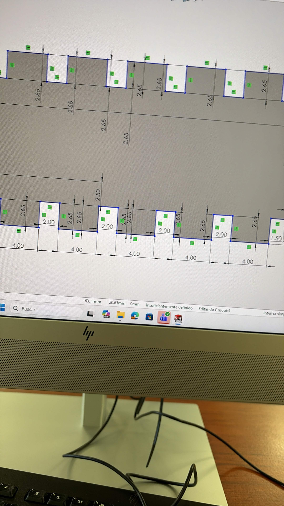
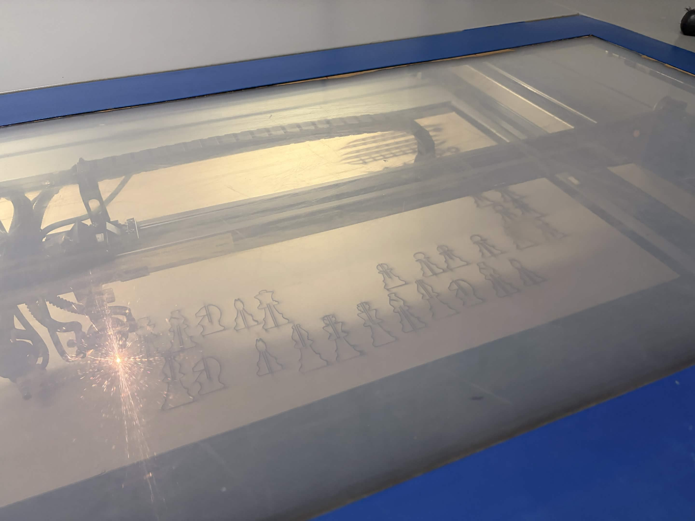
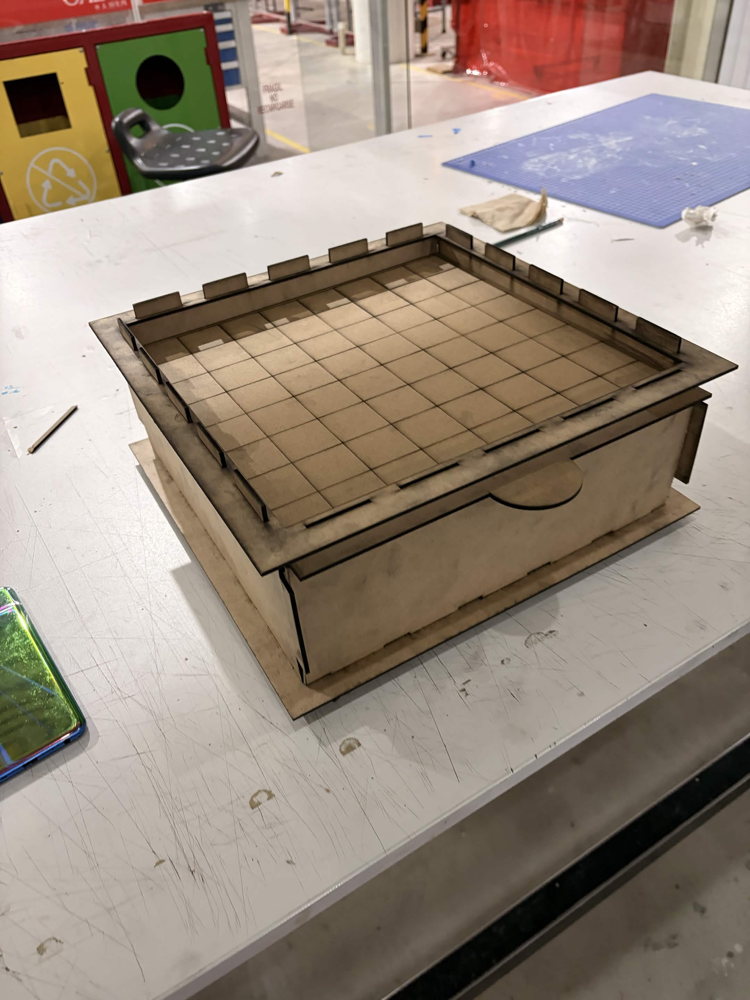
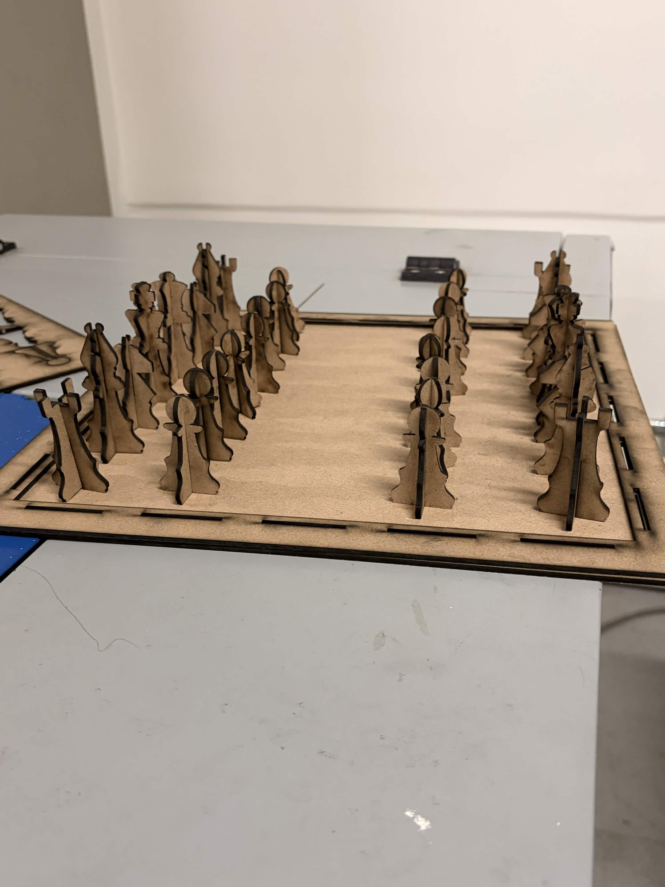

1. Introducción y Contexto
La materialización de diseños virtuales en componentes físicos reales exige un dominio estricto de las herramientas de manufactura sustractiva mediante sistemas de corte por láser. Durante esta cuarta semana de actividades, el enfoque principal consistió en la preparación de archivos vectoriales a partir de modelos CAD, considerando las tolerancias de corte y la operación segura de la cortadora láser de CO2 para la fabricación de los tableros y componentes modulares del proyecto [1] [2].
Comprender los parámetros de exportación geométrica, el comportamiento de los materiales y las normativas de seguridad operativa es indispensable para garantizar ensamblajes precisos y evitar daños al equipo o al operador [1] [2].
2. Proceso de Diseño y Preparación de Archivos DXF
Para transferir de manera óptima las geometrías tridimensionales hacia el software de control de la máquina, se llevaron a cabo los siguientes procedimientos técnicos:
2.1 Modelado Paramétrico y Exportación DXF
¿Cómo funciona? Partiendo de un modelo sólido (CAD part) previamente estructurado en SolidWorks, se diseñaron las piezas considerando los grosores específicos del sustrato. Posteriormente, se genera un plano de dibujo (CAD drawing) enfocado en las caras de corte, eliminando elementos de cota innecesarios y guardando el documento directamente en formato .dxf para asegurar la total compatibilidad con el software de la cortadora [1].

2.2 Consideraciones de Tolerancia (Kerf) y Uniones
¿Cómo funciona? Se integraron tolerancias de corte precisas (kerf de 0.022 cm para MDF y 0.02655 cm para acrílico) con la finalidad de asegurar ajustes exactos en uniones de tipo lengüeta y ranura (finger/tab joints) sin requerir adhesivos adicionales [3].
3. Operación de la Cortadora Láser y Seguridad
La manufactura física de los elementos se ejecutó utilizando la cortadora láser industrial (referenciada en el sistema como impresora3d.jpg), siguiendo estrictos protocolos operativos y de seguridad industrial [2]:
3.1 Principio de Funcionamiento y Protocolo de Seguridad (Safety)
¿Cómo funciona? El equipo utiliza un haz de luz láser de CO2 concentrado mediante espejos móviles y una lente de enfoque para fundir o vaporizar el material de forma instantánea, apoyado por un flujo de aire comprimido. Es obligatorio mantener la cubierta cerrada para filtrar la radiación, encender el sistema de extracción de humos para evitar gases tóxicos y mantener supervisión constante para prevenir riesgos de ignición [2].
3.2 Configuración en el Software de Control y Ejecución
¿Cómo funciona? En el software incluido con la máquina, denominado Laser Software, se importa el archivo .dxf, se configuran los parámetros de velocidad y potencia según la tabla de materiales permitidos (evitando plásticos con cloro o superficies altamente reflectantes) [2]. Asimismo, se posiciona y alinea el material sobre la cama de trabajo antes de proceder con la ejecución del corte [2].

4. Resultados y Ensamble
Tras finalizar el proceso de corte sustractivo con láser, se procedió al post-procesamiento y armado de los componentes fabricados:
4.1 Armado del Tablero

4.2 Ensamblaje de Piezas

5. Conclusiones
La práctica demuestra que la correcta preparación de archivos vectoriales en SolidWorks, el uso adecuado del Laser Software y la comprensión detallada del ancho de corte (kerf) son factores determinantes para el éxito en la fabricación digital por láser [1] [3]. Asimismo, seguir rigurosamente los protocolos de seguridad asegura un flujo de trabajo eficiente y libre de riesgos en el taller [2].
6. Fuentes de Información
Los parámetros de fabricación y normas operativas se basan en la documentación técnica del laboratorio y la literatura especializada:
- [2] Manual de Operación IDIT. (2026). Guía de uso para Cortadora Láser CO2, Laser Software, parámetros de potencia y normativas de seguridad.
- [1] Planchard, D. C. (2020). Engineering Graphics with SOLIDWORKS. SDC Publications.
- [3] Groover, M. P. (2010). Fundamentos de Manufactura Moderna: Materiales, Procesos y Sistemas. McGraw-Hill.